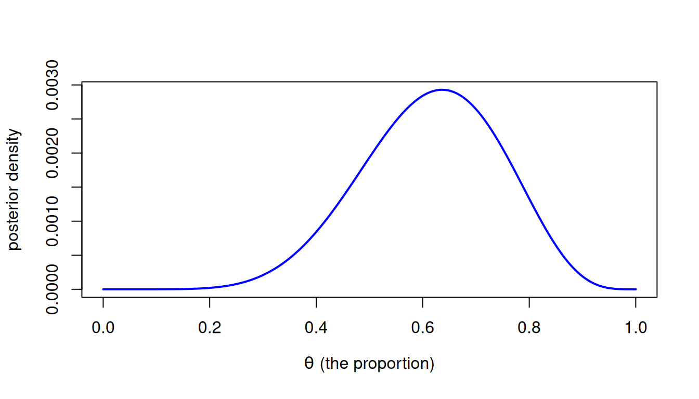

25Beyond the Normal Curve: Resampling, Robust, and Bayesian Statistics
Every method in this book so far has quietly relied on three assumptions: the normal curve (errors are Gaussian), a point estimate (one number for the answer), and a reject / fail-to-reject verdict (the \(p\)-value ritual). Those assumptions work well when the data cooperate. This chapter is about what to do when they don’t, when your sample is small, your distribution is lumpy, a few extreme points pull the average around, or you simply want a more honest account of what you know.
We meet three families of methods: resampling (let the data be their own population), robust statistics (estimators that a few bad points can’t dominate), and Bayesian inference (probability of the model given the data, not the data given the model). These are not three unrelated tricks. They share a common logic, and naming that shared logic is the most useful thing this chapter can do for you.
ImportantThe distinction that runs through everything: estimation vs. testing
Two different questions hide inside “doing statistics”:
Estimation - what is the value, and how sure am I? A number and its uncertainty: a slope and its interval, an effect and its spread.
Testing - is it different from some reference, or which model is better? A decision or a comparison.
Classical training fuses these into one motion (compute \(t\), read \(p\), declare significance). The methods in this chapter pull them back apart, and all three do testing through estimation: they estimate the whole distribution of the answer first, then let the test fall out of it (does the interval exclude zero? how much posterior sits near the null?). As you read each method below, keep asking: is this estimating, or testing, and how does it get from one to the other?
25.1 Learning Objectives
Use resampling (bootstrap, permutation, jackknife) to get standard errors, intervals, and tests without a normal-curve assumption.
Use robust estimators (median, trimmed mean, MAD, M-estimators) that a handful of outliers cannot capture.
Read a Bayesian analysis - prior, likelihood, posterior - and report it as estimation (credible interval) and as testing (ROPE, model comparison).
Draw the estimation-vs-testing distinction cleanly in each framework.
25.2 Part 1 · Resampling: Let the Data Be Their Own Population
The logic is simpler than it first appears. A statistic (a mean, a slope, an indirect effect) has a sampling distribution: the spread of values it would take across repeated samples from the population. Classical theory derives that spread from formulas that assume normality and large \(n\). Resampling estimates it directly, by treating your one sample as a stand-in for the population and drawing new samples from it.
When data sets are small, the usual methods… may be inappropriate (because of distributional characteristics) or insensitive. Bootstrapping, jackknifing and other methods of resampling may be helpful. - McKnight, McKnight & Figueredo, Australasian Evaluation Society, 1997
25.2.1 The bootstrap (estimation)
Bootstrapping resamples your data with replacement, n observations drawn from n, over and over, recomputing the statistic each time. The spread of those recomputed values is the estimated sampling distribution. Take a small, skewed sample - exactly where the normal-theory formula is least trustworthy - and bootstrap the mean:
NoteWorking in SPSS, Julia, or Python?
The code tabs below assume this chapter’s data is already loaded. Grab the one-file setup for your language from Getting the Book’s Data, run it once, then load what you need by name - this chapter uses ch25-skewed-sample, ch25-twogroups, ch25-outlier. For example, book_data("ch25-skewed-sample") in R, Julia, or Python, or !bookdata name = "ch25-skewed-sample". in SPSS. Every language reads the same shipped files, so your numbers will match the ones printed here exactly.
That is the entire idea: sample(samp, replace = TRUE) inside replicate(), then read the standard error off sd() and the confidence interval off quantile(). There is no formula, no normality assumption, and no \(z\). The 2.5th and 97.5th percentiles of the bootstrap distribution are a percentile confidence interval, and notice that it can be asymmetric, honestly reflecting the skew that a normal-theory interval would smooth over.
The bootstrap sampling distribution of the mean, with the percentile 95% interval.
* SPSS reports the bootstrap interval as a table rather than drawing the
* resampling distribution. To picture it, save the bootstrap estimates and
* histogram them:
BOOTSTRAP /SAMPLING METHOD=SIMPLE /VARIABLES TARGET=samp
/CRITERIA NSAMPLES=2000
/SAVE BOOTSTRAPESTIMATES.
GRAPH /HISTOGRAM = BootstrapMean.
usingPlotshistogram(boot_means, bins =40, legend =false, xlabel ="resampled mean", ylabel ="count")vline!(quantile(boot_means, [0.025, 0.975]), color =:red, linestyle =:dash)vline!([mean(samp)], color =:blue, linewidth =2)
The bootstrap estimated an interval. To test a hypothesis - say, that two groups have the same mean - we resample differently. Under the null “the group label is irrelevant,” we can shuffle the labels and see how big a difference arises by chance alone. The observed difference is “significant” if it lands in the tail of that shuffled distribution.
set.seed(7)g <-tibble(value =c(rnorm(15, mean =0.0), rnorm(15, mean =0.8)),group =rep(1:2, each =15))obs <- g |># the observed differencesummarise(m =mean(value), .by = group) |>arrange(group) |>summarise(diff = m[2] - m[1]) |>pull(diff)perm <-map_dbl(1:5000, \(i) { # shuffle labels 5000 times s <-sample(g$group)mean(g$value[s ==2]) -mean(g$value[s ==1])})tibble(observed_diff = obs,permutation_p =mean(abs(perm) >=abs(obs))) |># two-sided p-valuemutate(permutation_p =fmt_p(permutation_p)) |>round2()
observed_diff
permutation_p
0.44
0.297
* Base SPSS has no permutation test. The Exact Tests add-on module gives
* exact/Monte-Carlo p-values for many nonparametric procedures, which is
* the same logic applied to rank tests:
NPAR TESTS
/M-W = value BY group(1 2)
/MISSING ANALYSIS
/METHOD=MC CIN(99) SAMPLES(5000).
* A mean-difference permutation test as written in the other tabs has no
* base-SPSS equivalent; it needs the Python or R integration plug-in.
The permutation \(p\)-value is the fraction of shuffles that beat the real difference. It makes no distributional assumption at all; it rests only on the exchangeability of labels under the null.
25.2.3 The jackknife (a leave-one-out cousin)
Older and simpler than the bootstrap, the jackknife recomputes the statistic leaving out one observation at a time. It is handy for a quick standard error and for spotting influential points (if dropping one case moves the estimate a lot, you’ve found a leverage problem):
* Base SPSS has no jackknife. The leave-one-out logic is easy to write by
* hand, though: drop each case in turn and recompute the mean.
* (SPSS's BOOTSTRAP module covers the same ground more directly.)
COMPUTE id = $CASENUM.
EXECUTE.
* For each case i, the mean of everything except i:
AGGREGATE OUTFILE=* MODE=ADDVARIABLES /BREAK= /grand=SUM(samp) /n=N.
COMPUTE loo_mean = (grand - samp) / (n - 1).
EXECUTE.
DESCRIPTIVES VARIABLES=loo_mean /STATISTICS=MEAN STDDEV.
jk = [mean(samp[setdiff(1:end, i)]) for i ineachindex(samp)]n =length(samp)mean(jk), sqrt((n -1) *mean((jk .-mean(jk)).^2)) # jackknife mean and SE
jk = np.array([np.delete(samp, i).mean() for i inrange(samp.size)])n = samp.sizejk.mean(), np.sqrt((n -1) * ((jk - jk.mean())**2).mean()) # jackknife mean, SE
NoteEstimation vs. testing, the resampling version
Same engine, two jobs. Bootstrap → estimation (an SE and a percentile interval for whatever statistic you can compute - a mean, a correlation, a regression slope, even a mediation indirect effect \(a\cdot b\), as in the authors’ own bootstrapped mixed-effects mediation of coping and physical functioning (McKnight et al. 2010)). Permutation → testing (a \(p\)-value from label shuffling). And the two meet: a bootstrap interval that excludes zerois a test. Resampling has limits worth respecting: it is not a substitute for collecting more data, and it still requires a representative, random sample to begin with.
25.3 Part 2 · Robust Statistics: When a Few Points Hijack the Mean
Recall from the central tendency chapter that the mean is a least-squares estimator: it sits where squared deviations are smallest. Squaring is exactly why it’s fragile - one faraway point contributes an enormous squared deviation and drags the mean toward itself. A single bad value can move the mean anywhere; its breakdown point (the fraction of contamination it can tolerate before giving nonsense) is essentially \(0\%\).
Watch nineteen clean observations and one data-entry error:
set.seed(1)z <-c(rnorm(19, mean =100, sd =10), 250) # 19 good values + 1 gross outliertibble(mean =mean(z),median =median(z),trimmed10 =mean(z, trim =0.10), # drop the extreme 10% in each tailSD =sd(z),MAD =mad(z) # median absolute deviation) |>round2()
mean
median
trimmed10
SD
MAD
109.11
103.6
102.92
34.38
9.26
* Nineteen clean observations and one data-entry error.
INPUT PROGRAM.
LOOP #i = 1 TO 19.
COMPUTE z = RV.NORMAL(100, 10).
END CASE.
END LOOP.
COMPUTE z = 250.
END CASE.
END FILE.
END INPUT PROGRAM.
EXECUTE.
* EXAMINE reports the mean, median, the 5% trimmed mean, and the SD.
EXAMINE VARIABLES=z /STATISTICS=DESCRIPTIVES.
* MAD has no base-SPSS keyword; compute it from the median directly:
* COMPUTE absdev = ABS(z - <median>). then take the median of absdev,
* multiplied by 1.4826 for consistency with the SD under normality.
The mean and SD are inflated by the lone outlier; the median, 10% trimmed mean, and MAD barely notice it. That resistance is the whole point of robust statistics:
Median - breakdown point \(50\%\): half your data can be garbage before it fails.
Trimmed mean - discard a fixed fraction of each tail, then average the rest. A tunable compromise between mean (0% trim) and median (50% trim).
MAD - the robust analogue of the SD, a median of absolute deviations from the median.
M-estimators (Huber, Tukey bisquare) - down-weight, rather than discard, extreme points, via iteratively reweighted least squares. These are the robust-regression workhorses.
For real robust modeling in R, reach for maintained tools - MASS::rlm() for robust regression, and Rand Wilcox’s WRS2 package for robust group comparisons (trimmed-means tests, robust ANOVA). The idioms look like this:
library(MASS)rlm(happy ~ dogness, data = d) # robust regression (Huber M-estimator)library(WRS2)yuen(happy ~ group, data = d) # robust two-group test on trimmed meanst1way(happy ~ group, data = d) # robust one-way "ANOVA"
NoteEstimation vs. testing, the robust version
Estimation: report a robust center and spread - a trimmed mean with a MAD, or robust regression coefficients - instead of mean \(\pm\) SD when the tails are heavy. Testing: use tests built on those robust estimators (Yuen’s trimmed-means test, t1way) or - the pragmatic favorite in this book - bootstrap the robust estimator and check whether its interval excludes the null. Robustness and resampling are natural allies: diagnose the violation, then resample the resistant estimator.
25.4 Part 3 · Bayesian Inference: Probability of the Model Given the Data
Frequentist statistics computes \(P(\text{data} \mid \text{hypothesis})\): the \(p\)-value is the probability of data this extreme if the null were true. That is often not the quantity we actually care about. Bayesian inference computes what you usually want, \(P(\text{hypothesis} \mid \text{data})\), by way of Bayes’ rule:
The prior is what you believed about the parameter \(\theta\) before the data; the likelihood is what the data say; the posterior is the updated belief. That’s the whole machine. As McKnight puts it, Bayesian methods are “merely a vehicle for re-conceptualizing how we think about statistics” - they give you “insights you may already know, but didn’t know you knew.”
25.4.1 Why it matters: the arithmetic of the replication crisis
Here is a calculation worth sitting with, and it needs nothing but Bayes’ rule. You run a well-powered study, get \(p < .05\), and publish. What is the probability your hypothesis is actually true? It is not the \(p\)-value; that is \(P(\text{significant} \mid H \text{ false})\). The quantity you want is \(P(H \text{ true} \mid \text{significant})\), and it depends on how plausible your idea was before the data, its prior:
tibble(power =0.99, # P(significant | H true) -- a very high-powered studyalpha =0.01, # P(significant | H false) -- a strict false-positive rateprior =0.02# P(H true): your idea is ~1 of 50 plausible hypotheses) |>mutate(posterior =# Bayes' rule (power * prior) / (power * prior + alpha * (1- prior))) |>round2()
power
alpha
prior
posterior
0.99
0.01
0.02
0.67
* Bayes' rule applied to a screening question: given power, alpha, and a
* prior, what is the posterior probability the hypothesis is true?
DATA LIST FREE /power alpha prior.
BEGIN DATA
0.99 0.01 0.02
END DATA.
COMPUTE posterior = (power * prior) / (power * prior + alpha * (1 - prior)).
EXECUTE.
LIST VARIABLES=power alpha prior posterior.
Even with \(99\%\) power and a \(1\%\) false-positive rate, a significant result leaves you only about 67% sure - because the idea was a long shot to begin with. Loosen the study to more realistic numbers and it collapses further:
About 16%. Chase enough low-prior ideas with \(p < .05\) and most of your “discoveries” will be false, no matter how small the \(p\)-value. This is the arithmetic behind the replication crisis we met in hypothesis testing. The \(p\)-value does not answer the question you cared about, and Bayes’ rule does, but it asks you to state your prior out loud. That honesty is the point.
25.4.2 Building a posterior by hand (grid approximation)
You do not need fancy software to see the machine turn. Take the oldest example in the book - estimating a proportion (a coin’s bias, a globe’s water fraction, a treatment’s success rate) from a handful of trials. Lay down a grid of possible values, evaluate prior × likelihood at each, normalize, and you have a posterior:
posterior <-tibble(theta =seq(0, 1, length.out =1000)) |>mutate(prior =dbeta(theta, 2, 2), # weakly informative, centered at 0.5like =dbinom(6, size =9, prob = theta), # data: 6 successes in 9 trialspost = like * prior,post = post /sum(post) # normalize to a proper distribution )ggplot(posterior, aes(x = theta, y = post)) +geom_line(colour ="blue", linewidth =1) +labs(x =expression(theta ~"(the proportion)"), y ="posterior density") +theme_minimal()

Grid-approximation posterior for a proportion after 6 successes in 9 trials.
* Grid approximation of a posterior for a proportion after 6 successes
* in 9 trials, with a Beta(2,2) prior.
INPUT PROGRAM.
LOOP #i = 0 TO 1000.
COMPUTE theta = #i / 1000.
COMPUTE prior = PDF.BETA(theta, 2, 2).
COMPUTE like = PDF.BINOM(6, 9, theta).
COMPUTE post = like * prior.
END CASE.
END LOOP.
END FILE.
END INPUT PROGRAM.
EXECUTE.
* Normalise, then plot.
AGGREGATE OUTFILE=* MODE=ADDVARIABLES /BREAK= /tot=SUM(post).
COMPUTE post = post / tot.
EXECUTE.
GRAPH /LINE(SIMPLE) = VALUE(post) BY theta
/TITLE = 'Grid-approximation posterior'.
usingDistributions, Plotstheta =range(0, 1, length =1000)prior =pdf.(Beta(2, 2), theta) # weakly informativelike = [pdf(Binomial(9, t), 6) for t in theta] # data: 6 successes in 9 trialspost = like .* prior; post ./=sum(post)plot(theta, post, linewidth =2, legend =false, xlabel ="theta (the proportion)", ylabel ="posterior density")
import numpy as npimport matplotlib.pyplot as pltfrom scipy.stats import beta, binomtheta = np.linspace(0, 1, 1000)prior = beta.pdf(theta, 2, 2) # weakly informativelike = binom.pmf(6, 9, theta) # data: 6 successes in 9 trialspost = like * prior; post /= post.sum()plt.plot(theta, post, color="blue", linewidth=2)plt.xlabel(r"$\theta$(the proportion)"); plt.ylabel("posterior density")plt.show()
Now summarize the posterior - and here the estimation-vs-testing split becomes concrete.
Estimation. The answer is the whole posterior; we compress it into a point and an interval. Sampling from the grid makes this a one-liner. A Bayesian interval is a credible (or “compatibility”) interval, and - unlike a confidence interval - it means the plain-English thing: “given the model and data, there’s a 95% probability \(\theta\) is in here.”
* Sampling from the grid posterior needs a weighted draw, which base SPSS
* does not offer directly. The posterior mean and quantiles can instead be
* read off the grid itself, which is exact rather than simulated:
* posterior mean = SUM(theta * post)
* the 2.5th/97.5th percentiles are where the CUMULATIVE post crosses
* 0.025 and 0.975.
CREATE cum_post = CSUM(post).
EXECUTE.
TEMPORARY.
SELECT IF (cum_post >= 0.025 AND cum_post <= 0.975).
DESCRIPTIVES VARIABLES=theta /STATISTICS=MINIMUM MAXIMUM.
Testing. Rather than a point-null “is \(\theta\)exactly 0.5?” (a question of measure zero that is never truly true), Bayesians ask a better one: how much posterior belief sits in a Region of Practical Equivalence (ROPE) around the null - a band of values “close enough to 0.5 to not care”? If almost none of the posterior is in the ROPE, the effect is credibly not null; if most of it is, you have evidence for practical equivalence - something a \(p\)-value can never give you.
rope_lo <-0.45; rope_hi <-0.55# "practically a fair coin"# posterior probability inside the ROPEtibble(p_inside_rope =mean(draws > rope_lo & draws < rope_hi)) |>round2()
p_inside_rope
0.19
* The posterior probability inside a region of practical equivalence
* (here 0.45 to 0.55, "practically a fair coin"). On the grid this is
* simply the posterior mass between those two values.
TEMPORARY.
SELECT IF (theta > 0.45 AND theta < 0.55).
DESCRIPTIVES VARIABLES=post /STATISTICS=SUM.
rope_lo, rope_hi =0.45, 0.55# "practically a fair coin"mean(rope_lo .< draws .< rope_hi) # posterior probability inside the ROPE
rope_lo, rope_hi =0.45, 0.55# "practically a fair coin"((draws > rope_lo) & (draws < rope_hi)).mean() # probability inside the ROPE
25.4.3 From the toy to the real thing
Grid approximation shows the logic but doesn’t scale past a parameter or two. For real models, samplers (MCMC) do the integration. McKnight’s teaching stack is McElreath’s rethinking for concepts and brms for applied work - both compile to Stan under the hood. The thinking is identical to the grid above; only the engine changes:
library(rethinking)m <-quap(alist( y ~dnorm(mu, sigma), # likelihood mu <- a + b * x, a ~dnorm(0, 10), # priors b ~dnorm(0, 1), # weakly informative on a standardized predictor sigma ~dexp(1) ), data = d)post <-extract.samples(m)HPDI(post$b, prob =0.89) # highest-posterior-density (credible) intervalcompare(m1, m2, func = WAIC) # model comparison (predictive testing)
library(brms); library(bayestestR)fit <-brm(y ~ x, data = d, family =gaussian(),prior =prior(normal(0, 1), class ="b")) # regularizing priorhdi(fit) # estimation: credible intervalsp_direction(fit) # probability the effect has a given signrope(fit, range =c(-0.05, 0.05)) # testing: mass in the ROPEloo(fit) # model comparison via leave-one-out
Two habits from McKnight’s applied pipeline are worth stealing: standardize predictors so a normal(0, 1) prior is genuinely weakly-informative and interpretable, and simulate from your priors before touching the data to check they imply sane predictions (an over-tight prior underfits; a too-vague one overfits).
NoteEstimation vs. testing, the Bayesian version
Estimation is primary and everything else is downstream of it. Fit the model, get a posterior, report a credible interval (HPDI). “Testing” then comes in two honest flavors, neither of which is point-null rejection: practical significance via the ROPE (how much posterior is near the null?), and model comparison via predictive scores (WAIC, PSIS-LOO) or Bayes factors. A caution McKnight repeats: predictive testing is not causal estimation. A confounded model can out-predict the correct causal one, so “which model forecasts better” and “which parameter is right” are different questions. Do not let a good WAIC override a good DAG.
25.5 The Distinction, Woven Together
One table, three frameworks, two questions:
Framework
Estimation (value + uncertainty)
Testing (difference / comparison)
Classical (normal theory)
estimate \(\pm\) standard error; confidence interval
trimmed mean + MAD; robust regression coefficients
Yuen/t1way; bootstrap the robust estimator
Bayesian
posterior + credible (HPDI) interval
ROPE; model comparison (WAIC/LOO); Bayes factor
Read down the estimation column and the four approaches are more alike than different: all report a best value and a spread. Read down the testing column and you see the modern lesson of this whole book - testing is best done as a consequence of estimation, not as a separate ritual. Estimate the distribution of your answer honestly, and the test is already in your hands.
25.6 Challenge
TipDo One Yourself
Bootstrap a statistic that has no simple standard-error formula - the median, or the correlation between two variables. Compare your percentile interval to what you’d get pretending it was normal.
Take the outlier demo (z) and sweep the trimmed mean’s trim fraction from 0 to 0.5. Plot the trimmed mean against the trim fraction. Where does it stop moving, and what value has it become?
Re-run the grid-approximation posterior with a strong prior (dbeta(grid, 20, 20)) and a flat one (dbeta(grid, 1, 1)). How much does the prior move the posterior with only 9 trials, and with a simulated 900 trials? What does that tell you about when priors matter?
25.7 Where We Go Next
You now have three ways past the normal curve, and a single principle - estimate first, test second - that ties them together and reaches back through every chapter you’ve read. That principle is the quiet thesis of this book: statistics is the disciplined quantification of uncertainty, and the honest way to express uncertainty is a distribution, not a verdict. Wherever your data take you, whether a resampled interval, a robust slope, or a posterior, you are doing the same thing we started with: saying what you know, and how sure you are.
And knowing something is only half the job. The other half is showing it - honestly, to someone else who did not run your analysis and will not read your code. That craft, the display of data in graphics and tables, is where we turn next.
McKnight, Patrick E., Anita Afram, Todd B. Kashdan, Shelley Kasle, and Alex Zautra. 2010. “Coping Self-Efficacy as a Mediator Between Catastrophizing and Physical Functioning: Treatment Target Selection in an Osteoarthritis Sample.”Journal of Behavioral Medicine 33 (3): 239–49.